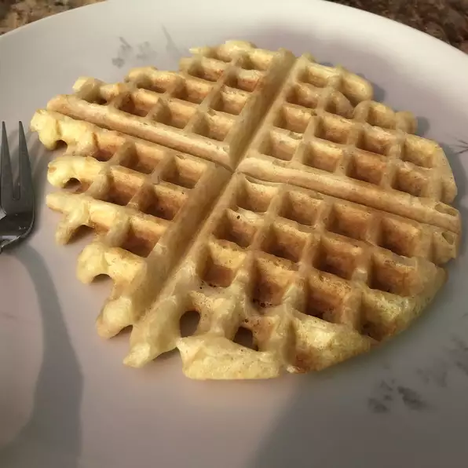

Yeast Waffles

Description:
This is a traditional yeast waffle recipe. It makes tasty, crunchy waffles. They are very good with syrup,
or my personal favorite is waffles topped with whipped cream and fresh strawberries!
Ingredients:
- 2 cups milk
- 1 (.25 ounce) package active dry yeast
- ½ cup warm water (110 degrees F/45 degrees C)
- ½ cup butter, melted
- 1 teaspoon salt
- 1 teaspoon white sugar
- 3 cups sifted unbleached all-purpose flour
- 2 eggs, slightly beaten
- ½ teaspoon baking soda
Steps:
- Warm milk in a small saucepan until it bubbles, then remove from heat.
- Dissolve yeast in warm water in a small bowl. Let stand until creamy, about 10 minutes.
- Combine milk, yeast mixture, butter, salt, sugar, and flour in a large bowl. Mix thoroughly with an
electric mixer until batter is smooth. Cover and let stand at room temperature overnight.
- The next morning, preheat a waffle iron.
- Stir beaten eggs and baking soda into batter; beat well.
- Spray the hot waffle iron with nonstick cooking spray. Pour mix onto waffle iron and cook until golden brown.